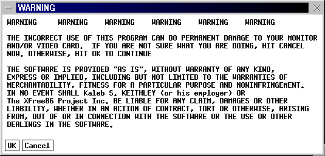
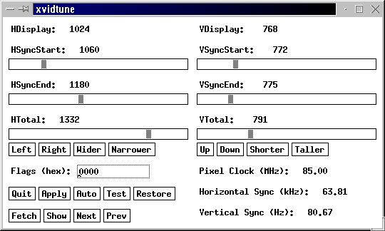

7.3. Конфигурирование (настройка) X-сервера.
Предупреждение: автор не
может гарантировать, что, следуя приведенным ниже советам, Вы получите желаемый
результат и не повредите Вашему компьютеру! Все, что Вы будете делать, Вы будете
делать на свой страх и риск!
Итак, будем предполагать, что после инсталляции Linux Вы либо не можете выйти
в графический режим, либо недовольны тем, как выводится изображение в
графическом режиме. Но текстовый режим у Вас работает и можно воспользоваться
некоторыми программами или командами ОС Линукс для настройки графического
режима. Кроме того, предполагается, что пакет XFree86 у Вас установлен, и все
файлы, упоминаемые ниже, на диске имеются. Если это не так, то сначала
установите пакет XFree86, воспользовавшись подсказками из раздела "Установка
нового ПО". Если эти предварительные условия выполнены, я надеюсь, что
приводимые ниже подробные пошаговые инструкции по настройке графического режима
позволят Вам осуществить эту настройку.
Как Вы, должно быть, поняли из
предыдущего материала, начать надо с настройки X-сервера, а перед этим собрать
некоторые данные, а именно:
- Названия фирм-производителей видеоадаптера и монитора (берем из
документации, если нет, то обойдемся);
- Тип набора микросхем, применяемых в видеоадаптере (по нему определяется
тип X-сервера, который должен работать у Вас);
- Обьем имеющейся видеопамяти;
- Допустимые интервалы частот горизонтальной и вертикальной синхронизации
для Вашего монитора (берутся из спецификации, приводимой в документации на
монитор).
- К числу необходимых для установки X Window сведений относятся также тип
Вашей мыши и клавиатуры (работать в графическом режиме без мыши довольно
неудобно, а без клавиатуры и вовсе нельзя, так что X-сервер должен быть
настроен на использование имеющихся у Вас типов этих устройств).
Что обязательно надо найти в документации, так это интервалы
допустимых частот горизонтальной и вертикальной синхронизации для Вашего
монитора (я не знаю, как получить их другим способом).
Далее запустим
программу
SuperProbe, перенаправив ее вывод в файл, например, sprobe.txt:
SuperProbe > sprobe.txtЗаглянув в этот файл
(воспользуйтесь клавишей F3 в программе Midnight Commander), Вы узнаете тип
набора микросхем и обьем имеющейся у Вас видеопамяти, а также RAMDAC (не знаю
пока что это такое, да вроде и не надо знать). У меня, например,
SuperProbe выдала в одном случае
Chipset: S3 Trio64 (Port Probed)
Memory: 1024 Kbytes
RAMDAC: Generic 8-bit pseudo-color DAC
(with 6-bit wide lookup tables (or in 6-bit mode))
в другом случае
Chipset: Trident 3DImage985 (PCI Probed)
Memory: 4096 Kbytes
RAMDAC: Trident Built-In 15/16/24-bit DAC
(with 6-bit wide lookup tables (or in 6-bit mode))
Теперь по типу микросхем видеоадаптера определяем тип X-сервера, который
должен быть у нас установлен. В пакет XFree86 версии 3.3.3 включены следующие
X-сервера:
XF86_SVGA: X-сервер для большинства видеоадаптеров, работающих
в режиме Super-VGA. В большинстве случаев Вы должны выбирать
именно этот сервер.
XF86_Mono: X-сервер для монохромных VGA и SVGA адаптеров.
XF86_VGA16: X-сервер для работы в стандартном 16-цветном режиме VGA.
Поскольку в этом режиме может работать практически любая пара
"видеоадаптер - монитор", Вы всегда можете установить этот сервер,
если с другими ничего не получается.
XF86_S3: X-сервер для видеоадаптеров, построенных на наборах микросхем
от фирмы S3 с видео-ускорителями (S3 accelerated server).
XF86_Mach32: X-сервер для видеоадаптеров, построенных на наборах микросхем
Mach32 фирмы ATI с видео-ускорителями (ATI Mach32 accelerated server).
XF86_Mach64: X-сервер для видеоадаптеров, построенных на наборах микросхем
Mach64 фирмы ATI с видео-ускорителями (ATI Mach64 accelerated server).
XF86_Mach8: X-сервер для видеоадаптеров, построенных на наборах микросхем
Mach8 фирмы ATI с видео-ускорителями (ATI Mach8 accelerated server).
XF86_8514: X-сервер для видеоадаптеров IBM 8514/A и совместимых с ними.
XF86_P9000: X-сервер для видеоадаптеров, построенных на наборах микросхем
P9000 фирмы Weitek, таких как Diamond Viper и Orchid P9000.
XF86_AGX: X-сервер для видеоадаптеров, построенных на наборах микросхем
AGX, таких как Boca Vortex, Orchid Celsius, Spider Black Widow и
Hercules Graphite.
XF86_W32: X-сервер для видеоадаптеров, построенных на наборах микросхем
ET4000/W32 и ET6000, включая видеокарты Genoa 8900 Phantom 32i,
Hercules Dynamite, LeadTek WinFast S200, Sigma Concorde,
STB LightSpeed, TechWorks Thunderbolt и ViewTop PCI.
Вообще говоря, программа инсталляции Linux автоматически определяет, какой
сервер у Вас должен стоять и инсталлирует его. Одновременно формируются линки с
именем X в каталогах /etc/X11/ и /usr/X11R6/bin/ на этот сервер (примерно такого
вида:
@X -> /usr/X11R6/bin/XF86_SVGA).Несмотря на это, имеет смысл
посмотреть, какой именно сервер у Вас установлен и соответствует ли он набору
микросхем вашего видеоадаптера, наименование которого сообщено программой
SuperProbe.
Для этого загляните в файл README.Sname (где Sname - краткое название
выбранного Вами типа X-сервера), расположенный в каталоге
/usr/X11R6/lib/X11/doc/ (например, README.S3). В самом начале этих файлов даны
перечни типов микросхем, поддерживаемых данным сервером, так что Вы можете
удостовериться, что у Вас установлен именно тот сервер, который нужен. Если в
этом перечне не указан тип, который Вам сообщила программа SuperProbe,
то, возможно, произошла какая-то ошибка с выбором сервера. Попробуйте выбрать
другой.
Для сервера SVGA нет файла с именем README.SVGA, зато в файле
/usr/X11R6/lib/X11/doc/README дан полный перечень типов микросхем,
поддерживаемых установленной у Вас версией пакета XFree86. Проверьте себя по
этому перечню. Если Вы не нашли указания на Ваш тип микросхем в этих перечнях,
Вам надо искать новую версию XFree86, которая поддерживает Ваш видеоадаптер.
Говорят, на сервере фирмы SuSE есть драйвера для нестандартных адаптеров,
попытайте счастья там. Кроме того, существует возможность встроить в сервер
драйвер для конкретного типа микросхем, но поскольку настоящий материал
рассчитан на начинающих пользователей, мы эту возможность рассматривать здесь не
будем.
Следующий шаг в настройке X заключается в задании конфигурации X-сервера.
Конфигурация X-сервера определяется файлом /etc/X11/XF86Config,
поэтому самый правильный способ настройки X-сервера состоит в прямом
редактировании этого файла. Правда для настройки существуют несколько программ,
которые облегчают этот процесс (одновременно затуманивая суть):
Xconfigurator, xf86config, XF86Setup и xvidtune. Как
бы не были хороши и удобны эти программы, они всего лишь создают или редактируют
файл /etc/X11/XF86Config. Если Вы умеете настраивать X Window вручную, Вы
всегда сможете правильно воспользоваться этими инструментами. Поэтому будем
рассматривать именно ручной способ настройки X-сервера, заключающийся в
редактировании файла настройки /etc/X11/XF86Config.
Однако полностью писать этот файл с нуля не стоит. Давайте все же
воспользуемся вначале программой Xconfigurator для того, чтобы создать
хоть какой-то файл /etc/X11/XF86Config. Отметим, что в процессе
инсталляции ОС Linux именно эта программа использовалась для установки системы X
Window, так что мы не будем здесь описывать, как ею пользоваться (смотри раздел 2.11.). Если
Вы не отказались от установки X Window в процессе инсталляции системы (именно от
установки, а не от автоматического запуска, не путайте!), то такой файл у Вас
уже есть. Если по каким-то причинам Вы устанавливали XFree86 отдельно от
установки Linux, то запустите Xconfigurator заново (можно запустить
команду setup и уже из нее запустить Xconfigurator). В качестве
руководства по использованию программы воспользуйтесь разделом 2.11.
Итак, Вы имеете какой-то вариант файла /etc/X11/XF86Config. Попробуйте
просто запустить графический режим командой startx. Если Вам это удалось,
и вид полученной графической среды Вас вполне устраивает, то значит Вы можете
пропустить оставшийся текст данного раздела и перейти к следующему разделу.
Если вместо красивой графической среды Вы увидели черный экран или какие-то
мелькающие полоски, то вернитесь в текстовый режим, нажав комбинацию
[Ctrl]+[Alt]+[BackSpace] (эта комбинация может выручить Вас в случае любых
затруднений с графическим режимом, так что рекомендую запомнить, что она
позволяет завершить работу системы X Window). Однако не слишком торопитесь
воспользоваться этой магической комбинацией, поскольку переход в графический
режим требует определенного времени; я вначале несколько раз прерывал загрузку
комбинацией [Ctrl]+[Alt]+[BackSpace] и не мог понять, почему у меня графика не
запускается, хотя вся причина заключалась в моей поспешности.
Если Вам
удалось переключиться в графику, но Вы недовольны полученным результатом (не тот
оконный менеджер, не нравится запускаемая по умолчанию конфигурация и т.п.), то
переходите к следующему подразделу, в котором обьясняется, как происходит запуск
графического режима, и как на этот процесс повлиять.
А мы пока что вернемся
к настройке X-сервера и рассмотрим структуру файла /etc/X11/XF86Config.
Файл /etc/X11/XF86Config состоит из следующих секций:
Section
"Files"
Section "Module"
Section "ServerFlags"
Section "Keyboard"
Section "Pointer"
Section
"Monitor"
Section "Device"
Section "Screen"
Каждая
секция начинается строкой с названием секции (в той форме, как эти названия были
только что перечислены) и заканчивается строкой
EndSection
Секций
"Monitor", "Device" и "Screen" в файле может быть несколько. Строки,
начинающиеся символом "#", являются комментариями.
Секция "Files" содержит несколько строк, в которых прописаны пути к файлу с
базой цветов (это таблица, задающая соответствия между цифровым и словесным
заданием цветов, эту строку не стоит редактировать) и каталогам с файлами
фонтов. Путей к каталогам с файлами фонтов может быть задано несколько.
Убедитесь только, что все указанные каталоги существуют и действительно являются
каталогами фонтов (там должен быть специальный файл fonts.dir, создаваемый
командой 'mkfontdir', этот файл не рекомендуют создавать вручную). Если при
запуске сервер будет выдавать сообщение типа "Can't open default font 'fixed'"
или что-то еще в таком роде, это свидетельствует о том, что в секции "Files"
ошибка в указании пути к файлу фонтов.
В этой же секции задаются пути к
каталогам, содержащим загружаемые модули. Какие именно модули загружаются и
параметры загрузки определяются в секции "Module", о которой мы сейчас говорить
не будем, как и о секции "ServerFlags". Оставьте эти две секции в том виде, как
они созданы программой Xconfigurator.
Далее идет секция "Keyboard". Во-первых, здесь нужно указать тип клавиатуры.
Помните, что обычная клавиатура для персональных компьютеров обозначается как
"Generic 102-key PC (intl)" вместо предлагаемого по умолчанию варианта "Generic
101-key PC". Кроме того, здесь можно указать протокол для работы с клавиатурой
(Xqueue или Standart), скорость повтора (the repeat rate), а также
переопределить значения некоторых клавиш. Для начала, пожалуй, стоит оставить
без изменения значения этих параметров.
Следующая секция "Pointer". В ней задаются параметры работы мыши. Самые
существенные в этой секции 2 строки (для примера привожу строки из своего
файла):
Protocol "PS/2"
Device "/dev/mouse"
определяющие протокол и файл устройства. Если Ваша мышь подключена к
специальному ("мышиному") разъему, то в строке Protocol должно быть указано либо
"PS/2", либо более длинное слово, оканчивающееся на "PS/2". Остальные протоколы
используются для мышей, подключаемых через последовательный порт. Обратите
внимание на то, что не всегда протокол совпадает с названием
фирмы-производителя. Так некоторые из мышей фирмы Logitech используют либо
протокол MouseMan или Microsoft.
Если Ваша мышь выпущена относительно
недавно, можно поставить "Auto" в графе Protocol.
Секция "Monitor" обычно начинается тремя строками, в которых указывается
производитель монитора и его модель, однако если у Вас только одна секция
"Monitor", то эти строки вполне могут иметь вид:
Identifier "Unknown"
VendorName "Unknown"
ModelName "Unknown"
Если имеется две и более секций "Monitor", то идентификаторы должны быть
разные.
Далее идут две очень важные строки, определяющие допустимые значения частот
вертикальной и горизонтальной синхронизации. Для современных мульти-частотных
мониторов эти строки могут иметь примерно такой вид:
HorizSync 30-70
VertRefresh 50-180
Для мульти-частотных мониторов с фиксированными частотами:
HorizSync 31.5, 35.2
VertRefresh 60, 65
Для мульти-частотных мониторов с несколькими интервалами допустимых
частот:
HorizSync 15-25, 30-50
VertRefresh 40-50, 80-100
Частоты горизонтальной синхронизации задаются в килогерцах, частоты
вертикальной синхронизации (обновления экрана) - в герцах. Обязательно
проверьте, что здесь указаны значения, соответствующие характеристикам Вашего
монитора, приведенным в документации на монитор.
Вслед за этими пятью строками идет определение различных режимов работы
монитора. Режимы могут задаваться в двух эквивалентных форматах: в виде одной
строки или несколькими строками. Вот пример задания одного и того же режима в
этих двух форматах:
Modeline "640x480example" 25.175 640 664 760 800 480 491 493 525 -HSync +VSync
Mode "640x480example"
DotClock 25.175
Htimings 640 664 760 800
VTimings 480 491 493 525
Flags "-HSync +VSync"
EndMode
Первое слово в каждом формате (Modeline или Mode), как и слово EndMode,
являются служебными. По ним X-сервер определяет, что данная строка или группа
строк служат для задания видеорежима. Следующее слово (в кавычках) является
названием данного режима. Вы можете выбрать это название по своему вкусу (хотя,
как пишет Игорь Николаев, "я бы не стал использовать в названии ничего, кроме
цифр и букв латинского алфавита").
Следующее число (оно может быть дробным) задает тактовую частоту развертки
(частоту вывода точек на экран) в мегагерцах.
Далее следуют четыре целых числа (группа Htimings), определяющих параметры
строки, а, значит, разрешение по горизонтали.
Первое из этих чисел задает
число видимых точек в строке. Чтобы пояснить значение следующих трех чисел,
давайте условимся, что началом строки будем считать не самую левую точку в
строке (что для человека наиболее естественно), а левую границу видимого
изображения. Тогда первое число в этой группе определяет число точек от начала
строки до конца видимой части строки.
Второе число - число точек от начала
строки до начала импульса горизонтальной синхронизации (в этот момент начинается
перемещение электронного луча с правой границы экрана на левую).
Третье
число - число тактов развертки от начала изображения до того момента, когда
электронный луч будет готов к выводу следующей строки изображения. То есть
разность третьего и второго чисел задает длительность интервала, отводимого на
перевод электронного луча от правой (с точки зрения пользователя) границы экрана
к левой границе.
И, наконец, четвертое число - общее число тактов,
затрачиваемых на формирование одной строки изображения (с учетом невидимой части
и времени, необходимого для перевода луча на новую строку).
Аналогично формируются следующие 4 числа (VTimings) в описании формата,
только в данном случае речь будет идти о числе строк на экране (видимых и
невидимых) и импульсе вертикальной синхронизации (началом экрана как бы считаем
верхнюю границу видимой части изображения).
О последней группе параметров в описании видеорежима (группа Flags) мы
поговорим позже, когда рассмотрим вопрос о том, как правильно сформировать
значения числовых параметров.
Если Вы посмотрите файл XF86Config, созданный программой Xconfigurator, Вы
увидите там в секции "Monitor" массу строк Modeline, задающих различные режимы.
Каждой строке Modeline, описывающей режим работы монитора, предшествует строка
комментария, в которой указана частота горизонтальной развертки для этого
режима. Обратите внимание на то, что в файле XF86Config имеется по несколько
строк Modeline с одинаковыми названиями режима после слова Modeline. В файле,
создаваемом программой Xconfigurator, прописываются стандартные наборы
параметров режимов монитора. При запуске X-сервера он автоматически выбирает из
приведенных режимов лучший вариант, поддерживаемый монитором и видеокартой
(решение принимается на основе значений, указанных в стоках HorizSync и
VertRefresh, так что очень важно, чтобы они были заданы корректно).
Следующая секция, "Device", описывает Вашу видеоплату. В этой секции должны
быть указаны следующие данные:
- тип набора микросхем (Chipset);
-
количество видеопамяти (указывается в килобайтах);
- допустимые значения
тактовой частоты развертки (dot-clocks) или наименование используемого
генератора тактовой частоты;
- тип RAMDAC.
Эти параметры были,
по-видимому, критичны для старых видеоплат, но для современных они перестали
играть существенное значение. Большинство современных видеоплат имеют
программируемые генераторы частот, которые могут задавать тактовую частоту
развертки в очень широких пределах. Поэтому оставьте эту секцию в том виде, как
она была прописана в файле XF86Config, который создала программа Xconfigurator.
У меня, например, эта секция имеет вид:
Section "Device"
Identifier "My Video Card"
VendorName "Unknown"
BoardName "Unknown"
#VideoRam 4096
# Insert Clocks lines here if appropriate
EndSection
Только в том случае, если у Вас какой-то экзотический тип видеоплаты
(особенно если Вы знаете, что она поддерживает только ограниченное число частот
генератора), надо позаботиться о корректном задании режимов в этой секции.
В
этом случае можно попробовать запустить X-сервер с опцией -probeonly для
получения необходимых данных. Вызов команды
X -probeonly приводит к тому,
что протокол загрузки сервера выдается на стандартный вывод, даже если сервер не
запустится. Этот протокол можно перенаправить в файл, введя команду в следующем
формате:
X -probeonly > /tmp/xlog.txt
2>&1,
и затем проанализировать все сообщения. Перед запуском этой
команды убедитесь, что файл XF86Config не содержит строки Clocks (при
необходимости закомментируйте ее). X-сервер по этой команде производит
тестирование допустимых частот. Это не должно повредить Вашему монитору, самое
страшное, что может случиться, - это то, что монитор выключится. Как бы то ни
было, выходной файл будет сформирован и Вы получите нужные данные.
Я, например, нашел в выходном файле следующие строки, имеющие отношение к
заданию параметров видеоплаты (обратите, кстати, внимание на то, что в выводе
перечислены все типы наборов микросхем, поддерживаемых данным сервером, то есть
можно таким способом проверить и правильность выбора X-сервера):
Configured drivers:
SVGA: server for SVGA graphics adaptors (Patchlevel 0):
NV1, STG2000, RIVA 128, RIVA TNT, RIVA TNT2, RIVA ULTRA TNT2,
RIVA VANTA, RIVA ULTRA VANTA, RIVA INTEGRATED, ET4000, ET4000W32,
ET4000W32i, ET4000W32i_rev_b, ET4000W32i_rev_c, ET4000W32p,
ET4000W32p_rev_a, ET4000W32p_rev_b, ET4000W32p_rev_c,
ET4000W32p_rev_d, ET6000, ET6100, et3000, pvga1, wd90c00, wd90c10,
wd90c30, wd90c24, wd90c31, wd90c33, gvga, ati, sis86c201, sis86c202,
sis86c205, sis86c215, sis86c225, sis5597, sis5598, sis6326, sis530,
sis620, tvga8200lx, tvga8800cs, tvga8900b, tvga8900c, tvga8900cl,
tvga8900d, tvga9000, tvga9000i, tvga9100b, tvga9200cxr, tgui9400cxi,
tgui9420, tgui9420dgi, tgui9430dgi, tgui9440agi, cyber9320, tgui9660,
tgui9680, tgui9682, tgui9685, cyber9382, cyber9385, cyber9388,
cyber9397, cyber9520, cyber9525, 3dimage975, 3dimage985, cyber9397dvd,
blade3d, cyberblade, clgd5420, clgd5422, clgd5424, clgd5426, clgd5428,
clgd5429, clgd5430, clgd5434, clgd5436, clgd5446, clgd5480, clgd5462,
clgd5464, clgd5465, clgd6205, clgd6215, clgd6225, clgd6235, clgd7541,
clgd7542, clgd7543, clgd7548, clgd7555, clgd7556, ncr77c22, ncr77c22e,
cpq_avga, mga2064w, mga1064sg, mga2164w, mga2164w AGP, mgag200,
mgag100, mgag400, oti067, oti077, oti087, oti037c, al2101, ali2228,
ali2301, ali2302, ali2308, ali2401, cl6410, cl6412, cl6420, cl6440,
video7, ark1000vl, ark1000pv, ark2000pv, ark2000mt, mx, realtek,
s3_savage, s3_virge, AP6422, AT24, AT3D, s3_svga, NM2070, NM2090,
NM2093, NM2097, NM2160, NM2200, ct65520, ct65525, ct65530, ct65535,
ct65540, ct65545, ct65546, ct65548, ct65550, ct65554, ct65555,
ct68554, ct69000, ct64200, ct64300, mediagx, V1000, V2100, V2200,
p9100, spc8110, i740, i740_pci, Voodoo Banshee, Voodoo3, generic
(using VT number 7)
(**) stands for supplied, (--) stands for probed/default values
(**) SVGA: Graphics device ID: "My Video Card"
(**) SVGA: Monitor ID: "ViewSonic G771"
(--) SVGA: PCI: Trident 3DImage985 rev 243, Memory @ 0xe3000000, 0xe2800000
(--) Trident chipset version: 0xf3 (3DImage985)
(--) SVGA: Revision 11.
(--) SVGA: TV interface is NTSC
(--) SVGA: DAC is enabled for TV
(--) SVGA: VGA display is connected.
(--) SVGA: Using Trident programmable clocks
(--) SVGA: chipset: 3dimage985
(--) SVGA: videoram: 4096k
(--) SVGA: Maximum allowed dot-clock: 230.000 MHz
Этих данных в большинстве
случаев достаточно для задания значений в секции "Device".
Команда X, о которой только что шла речь, вообще говоря, является просто
ссылкой на установленный у Вас X-сервер. Если нет этой ссылки (линка) или нет
самого сервера, то результат, естественно, не получится. Проверьте, есть ли в
каталоге /usr/X11R6/bin какой-то X-сервер, например, XF86_SVGA. Если есть, то
можно попробовать запустить его непосредственно:
XF86_SVGA -probeonly > xlog.txt 2>&1,
в противном
случае надо сначала установить сервер, соответствующий Вашей видео-системе.
Однако рассказывать о том, как это делается, мы здесь не будем, смотрите раздел об установке ПО.
Итак, в секциях "Monitor" и "Device" Вы описали имеющееся у Вас аппаратное
обеспечение. Но, как было сказано выше, таких секций может быть несколько, а в
секции "Monitor" может быть к тому же перечислено множество режимов работы
монитора. Теперь надо сообщить X-серверу, какие именно режимы работы
оборудования использовать. Это делается в секции "Screen" файла XF86Config. Для
каждого типа используемого Вами X-сервера должна быть создана своя секция
"Screen". Типов серверов имеется 5:
- SVGA (XF86_SVGA);
- VGA16
(XF86_VGA16);
- VGA2 (XF86_Mono);
- MONO (XF86_Mono, XF86_VGA16);
-
ACCEL (XF86_S3, XF86_Mach8, XF86_Mach32, XF86_Mach64, XF86_8514, XF86_P9000,
XF86_AGX, XF86_W32).
Мы выберем какой-то один сервер и поэтому создадим
только одну секцию "Screen". Эта секция может содержать несколько подсекций
(Subsection) "Display", по одной такой подсекции на каждую глубину цвета. В этой
подсекции указывается также размер виртуального экрана, который будет
использоваться сервером. Например, Вы можете иметь дисплей с разрешением
800х600, а размер виртуального экрана задать равным 1024х768. Тогда в каждый
момент времени вы будете видеть на дисплее только часть полного изображения.
Надо, однако учитывать, что видеопамять должна хранить изображение, равное по
размеру виртуальному экрану, а также то, что нежелательно занимать всю память
хранением виртуального экрана, поскольку в этом случае не остается резерва на
кэширование, что может повлечь потерю 30-40% производительности сервера.
В подсекции "Display" Вы должны прописать те режимы монитора, которые будете
использовать. Режимы задаются в строке Modes. Они указываются путем перечисления
их наименований, взятых из секции "Monitor" (в точности в том виде, как эти
названия указаны после слова Modeline). В одной строке можно перечислить любое
число таких имен режимов. Первый из указанных режимов будет запускаться по
умолчанию, в остальные можно будет переключаться (циклически), нажимая
комбинацию клавиш [Ctrl]+[Alt]+[+ на цифровой клавиатуре] или [Ctrl]+[Alt]+[- на
цифровой клавиатуре].
Вот теперь, когда Вы знаете, как устроен файл XF86Config, определяющий
настройки X-сервера, и где какую настойку задавать, можно закончить с выбором
режима.
Начнем наши эксперименты с настройками с того варианта файла XF86Config,
который был создан программой Xconfigurator. Вначале определимся с желательным
разрешением экрана. Предположим, Вы хотите иметь возможность работать в двух
режимах: 800x600 и 1024x768. Как уже говорилось, чтобы поберечь глаза, надо
обеспечить частоту обновления экрана не менее 72 герц. Поэтому просмотрим все
строки Modeline, которые соответствуют разрешениям 800x600 и 1024x768, и
исключим (просто удалим) те из них, в которых частота обновления экрана (она
указывается в строке комментария для каждой строки Modeline) меньше 72 Гц.
После этого дайте команду
X -probeonly >
/tmp/xlog.txt 2>&1,
и просмотрите файл /tmp/xlog.txt. Сервер
сообщит Вам имена тех режимов, которые для него неприемлемы по критерию частоты
горизонтальной синхронизации (только учтите, что эта частота должна быть
корректно задана в строке
HorizSync 30-70
файла
XF86Config). Теперь можно смело удалить из XF86Config все режимы, относительно
которых команда
X -probeonly выдала такие вот сообщения:
(--) SVGA: Mode "n" needs hsync freq of 90 kHz. Deleted.
Зная
ограничения на частоту горизонтальной синхронизации, определяемую монитором, Вы
можете и без запуска сервера удалить все режимы, которые не соответствуют
ограничениям, определяемым характеристиками монитора (просто для того, чтобы
проще было работать с файлом XF86Config). Хотя лучше в данном случае не
полагаться на свои знания, а проверить себя с помощью X-сервера.
Теперь давайте по порядку опробуем все оставшиеся в XF86Config режимы.
Для этого присвоим каждому из режимов, прописанных в этом файле, уникальное
название (например, измените название типа "800x600" на порядковый номер режима
"n"), оставим в файле XF86Config только одну секцию "Screen", в которой будет
всего одна подсекция "Display" (все остальные варианты секции "Screen" либо
удалим, либо закомментируем). Вот пример того, как это выглядело у меня:
Section "Screen"
Driver "svga"
Device "My Video Card"
Monitor "ViewSonic G771"
Subsection "Display"
Depth 8
Modes "800x600" "1024x768"
ViewPort 0 0
EndSubsection
EndSection
Отредактировав таким образом файл XF86Config, запускаем X-сервер
командой
X. Если Вы увидите серый прямоугольник с крестиком курсора
посредине, то данный режим приемлем. Если же экран погаснет (станет черным) или
пойдет какое-то мелькание, то режим неприемлем и его можно тоже удалить из файла
XF86Config. После проверки первого режима меняйте указание на режим в строке
Modes подсекции "Display" и снова запускайте команду
X. После того, как
пройдете все режимы, у Вас останутся только те, которые могут работать на Вашем
оборудовании.
После этих экспериментов верните все наименования режимов к тому виду, как их
назвал Xconfigurator (то есть переименуйте все режимы "n-640x480" снова в
"640x480"), пропишите все оставшиеся не отбракованными режимы в строке Modes
секции "Screen" примерно таким образом:
Modes "640x480" "800x600" "1024x768" "1152x864" "1280x1024"
запустите
X-сервер и попробуйте переключать режимы с помощью комбинации клавиш
[Ctrl]+[Alt]=[+ на цифровой клавиатуре] и [Ctrl]+[Alt]=[- на цифровой
клавиатуре]. Если все проходит нормально, то стоит сохранить получившуюся версию
файла XF86Config, прежде чем продолжать эксперименты. Если переключение не
работает, то можно попробовать убрать часть режимов из строки Modes. В конце
концов нам нужен для работы всего один режим. Поскольку по отдельности режимы
работают, то можно выбрать один режим и ограничиться этим.
Теперь, когда работающая версия XF86Config уже есть и сохранена на всякий
случай, можно попробовать еще немного поиграть цифрами в группах HTimings и
VTimings режимов, оставшихся не отбракованными. Закомментируйте все строки
Modeline, кроме одной, и попробуйте изменить сначала средние цифры в группах
HTimings и VHTimings. За счет этого можно отрегулировать ширину темных полей
вокруг изображения. Помните только, что для HTimings все цифры должны быть
кратны 8.
Когда Вы немного осмелеете, почувствовав, что что-то можно менять, не нанося
вреда монитору, можете взяться и за крайние цифры. Однако помните, что эти цифры
влияют на частоты горизонтальной и вертикальной синхронизации, а также требуемую
частоту тактовой развертки. Так что на этой стадии экспериментов при изменении
хотя бы одного значения полностью пересчитывайте всю строку и проверьте, что все
частоты принимают допустимые значения. Это особенно критично для мониторов с
фиксированными частотами и видеоадаптеров с фиксированными значениями частот
тактовой развертки.
Стоит сказать, что для подбора режимов работы монитора имеется специальная
программа - xvidtune. Запускать ее можно только после того, как Вы
добились, что графический режим у Вас работает. Выйдите в графический режим
командой startx и запустите xvidtune в окне эмулятора терминала.
Вы увидите вначале суровое предупреждение:

в котором сообщается, что ни
разработчик программы, ни XFree86 Project Inc. не несут никакой ответственности
за последствия ее применения. И если Вы не понимаете, что делаете, то лучше не
беритесь! Где-то я встречал и упоминания о том, что на старых типах мониторов
неправильной установкой параметров можно добиться того, что Ваш монитор начнет
дымиться (за счет неправильной установки частот синхронизации, насколько я
понимаю). Но я надеюсь, что Вы будете достаточно осторожны и семь раз подумаете,
прежде чем применить какое-то значение режима. Если так, то вперед!
Закрываем окно с предупреждением (кнопка "OK") и видим основное окно
программы xvidtune:

Теперь Вы можете начать
настраивать изображение на мониторе. Если Вы хотите сместить его вправо, то
щелкните мышкой по кнопке "Right" (обратите внимание на изменение некоторых цифр
в окне программы), а затем по кнопке "Apply". Вы увидите, что изображение
сдвинется вправо. Аналогично можно подвинуть его влево (кнопка "Left"), вверх
("Up") и вниз ("Down"). Можно также увеличить размер изображения по горизонтали
("Wider") или вертикали ("Taller") и, наоборот, уменьшить (соответственно
"Narrower" и "Shorter").
Запомните, что первоначальные установки можно всегда вернуть нажатием клавиши
"R" или щелчком по кнопке "Restore". Эта возможность особенно полезна в тех
случаях, когда необходимо восстановить стабильный режим работы после слишком
кардинальных изменений, когда изображение на экране пропадает вовсе или начинает
мелькать. Кнопка "Fetch" служит для запроса текущих значений установок режима
работы монитора.
Кнопка "Auto" является переключателем, то есть в режиме "Auto" (изображение
кнопки инвертируется, то есть отображается белыми буквами на черном фоне)
нажатие на кнопки Up/Down/Right/Left и Wider/Narrower/Shorter/Taller приводит к
немедленному (без щелчка по "Apply") изменению размера или положения
изображения.
Кнопка "Test" временно переключает установки в указанные
значения.
Кнопка "Show" служит для того, чтобы вывести выбранные значения на
стандартный вывод (практически - в окно эмулятора терминала, из которого была
запущена программа). Строка выводится в формате "Modeline", то есть в том виде,
как она должна быть записана в файле XF86Config.
Кнопка "Next" переключает
X-сервер в следующий видеорежим, а кнопка "Prev" - в предыдущий видеорежим (как
они заданы в строке "Modes").
После того, как Вы подобрали оптимальные с Вашей точки зрения значения
параметров видеорежима, запишите эти значения на бумагу. Не забудьте записать и
приведенные в правом нижнем углу значения частот вертикальной и горизонтальной
синхронизации. Формально они не нужны, но обычно пишутся в комментарии к строке
"Modeline". На всякий случай нажмите кнопку "Show" и завершите работу программы
нажатием кнопки "Quit". После этого осталось проверить, правильно ли Вы записали
значения и вписать новую строку "Modeline" в файл XF86Config.
Теперь еще обратите внимание на то, что как бы мы не изменяли положение
изображения, остается неизменным значение Pixel Clock в правом нижнем углу окна
программы xvidtune. Этот параметр не поддается изменению в рамках
программы xvidtune. Но после того, как выбраны размеры и положение
изображения на экране, можно и нужно рассчитать наилучшее значение этого
параметра. Принцип расчета прост: берем максимально допустимое для Вашего
монитора значение частоты горизонтальной синхронизации и делим его на размер
фрейма по горизонтали (это последнее число в группе HTimings), выданное
программой xvidtune. Это предельно допустимое значение частоты DotClock,
которое может быть задано в строке "Modeline". Для перестраховки я немного
округляю это значение в сторону уменьшения, чтобы не превысить максимальное
значение частоты горизонтальной синхронизации. На этом формирование строки
"Modeline" можно считать завершенным.
Аналогично можно подобрать значения для других таких строк (для других
разрешений), но, честно признаюсь, что мне эксперименты по изменению
видеорежимов через некоторое время наскучили. Я выбрал для себя один режим
работы дисплея и успокоился. Думаю, что так же будет и у Вас. Но прежде, чем
затвердить свой выбор, создайте еще по одной подсекции "Display" для каждого из
возможных значений глубины цвета. До сих пор была только одна подсекция,
соответствующая глубине цвета 8 бит. Наличие такой подсекции в секции "Screen"
обязательно, поэтому ее не изменяйте, а скопируйте столько раз, сколько разных
значений этого параметра Вы планируете использовать, после чего удалите из
полученных копий те режимы, для которых уже недостаточно памяти при данной
глубине. Чтобы графический режим запускался сразу с нужной глубиной цвета,
необходимо вставить в секцию "Screen" строку DefaultColorDepht, примерно такого
вида
DefaultColorDepht 24
У меня секция "Screen" приняла следующий вид:
Section "Screen"
Driver "svga"
Device "My Video Card"
Monitor "ViewSonic G771"
DefaultColorDepht 32
Subsection "Display"
Depth 8
Modes "1024x768"
ViewPort 0 0
EndSubsection
Subsection "Display"
Depth 32
Modes "1024x768"
ViewPort 0 0
EndSubsection
EndSection
Вроде и все. X-сервер теперь должен работать. Переходим к настройкам
графической среды в целом.
В.А.Костромин
Последние изменения
в содержание файла внесены
17 марта 2000 г. |